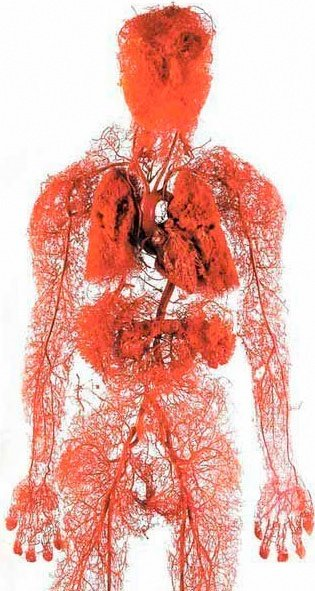
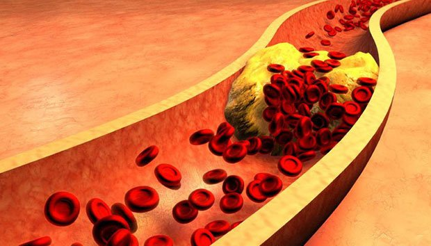
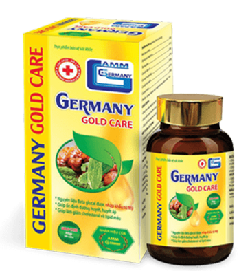

15:26, 10.11.2020
Nhức đầu, cao huyết áp, các khớp bị đau và ọp ẹp, đau lưng, đau nhức vai gáy, sưng chân, sưng mặt, ù tai, các ngón tay bị tê và chân tay lạnh, mắt kém, đãng trí, hay quên. Nhiều người gọi các triệu chứng trên là dấu hiệu tuổi già, sự thật đó chính là những dấu hiệu về bệnh lý.
Tại sao các mạch máu quyết định 89% sức khỏe của bạn?
4 dấu hiệu rõ ràng và 7 dấu hiệu cảnh báo mạch máu đang bị nhiễm bẩn
Làm thế nào để làm sạch mạch máu tại nhà một cách an toàn?
Có những dấu hiệu nào chứng tỏ mạch máu đang bị nhiễm độc ngoại trừ cholesterol cao
Những câu hỏi này đã được trả lời bởi người đứng đầu bộ phận phẫu thuật mạch máu tại Trường Đại học Y Khoa Berlin Charité, giáo sư, thực hành phẫu thuật thần kinh, Chuyên gia Abraham Gormalley.

Abraham Gormalley đã thực hiện hơn 15 700 phẫu thuật não. Bệnh nhân nhỏ tuổi nhất của ông chỉ mới 4 ngày tuổi.
Abraham Gormalley biết cách giải thích các quy trình y tế phức tạp bằng những từ ngữ đơn giản. Ông đã viết 51 cuốn sách khoa học phổ biến và hướng dẫn nghiên cứu cho những người tìm hiểu về y học. Ông đã khẳng định rằng các mạch máu trong cơ thể quyết định 89% sức khỏe, và sức khỏe của con người lại phụ thuộc vào độ tinh khiết của mạch máu.
4tgefd e c
4tgefd e c
Tại sao các mạch máu quyết định 89% sức khỏe của bạn?
Ông Abraham Gormalley, có thông tin cho rằng các mạch máu quyết định 89% sức khỏe của cơ thể. Thông tin này có đúng không, và nếu đúng thì tại sao có thể nói như vậy?
Khi được hỏi cơ quan lớn nhất trong cơ thể con người là gì? Tôi chắc chắn 90% chúng ta không biết. Ngay cả những sinh viên y khoa cũng có thể trả lời sai. Hầu hết câu trả lời đó là não và gan. Còn trong các cuốn sách giáo dục thì cho rằng đó là da. Tuy nhiên, thực tế cơ quan lớn nhất trong cơ thể chính là hệ thống tuần hoàn.
2,5 lần
Tổng chiều dài các mạch máu của một người trưởng thành gấp 2,5 lần so với chu vi Trái Đất

Tổng chiều dài các mạch máu của một người trưởng thành gấp 2,5 lần so với chu vi Trái Đất
Hãy tưởng tượng! Nếu chúng ta đã gỡ tất cả các mạch máu trong cơ thể người và buộc chúng thành một chuỗi dài, chiều dài của chuỗi này sẽ là khoảng 100.000 km.
Để so sánh - chiều dài đường xích đạo của Trái đất là 40.000 km. Hóa ra chỉ cần chuỗi các mạch máu trong cơ thể 1 con người đã có thể khoanh tròn toàn bộ hành tinh 2,5 lần.
Bạn nghĩ gì về quy mô của các mạch máu?
Mạch máu không chỉ là ống mang máu. Mạch máu liên kết và nuôi toàn bộ các cơ quan và các hệ thống của cơ thể. Do đó nếu máu đi qua cơ quan bị bệnh thì có thể mang mầm bệnh đó đi khắp cơ thể.
Mạch máu không chỉ là ống mang máu. Mạch máu liên kết và nuôi toàn bộ các cơ quan và các hệ thống của cơ thể. Do đó nếu máu đi qua cơ quan bị bệnh thì có thể mang mầm bệnh đó đi khắp cơ thể.
Bệnh đau chân – giãn tĩnh mạch, sưng đau và nặng nề, khó khăn khi bước đi, cảm thấy lạnh hoặc đau nhói ở bàn chân. Nứt gót chân. Lưu thông máu kém - không thể chống lại vi khuẩn, và do đó nấm phát triển. Móng tay dày và dài.
Tĩnh mạch gan bị tắc – viêm gan. Đắng miệng. Sau khi ăn chất béo - ợ đắng.
Các mạch bị suy yếu và bị ô nhiễm trong các khớp – sụn khô. Khớp trật và đau nhức, thoái hóa xương khớp, thoát vị đĩa đệm xuất hiện.
Tĩnh mạch hậu môn suy yếu – hình thành các búi trĩ và sa ra hậu môn.
Mạch máu của mắt – giảm thị lực, nước mắt sống, chấm đen ruồi bay. Đục thủy tinh thể đang phát triển. Mắt đỏ, triệu chứng mà chúng ta thường nghĩ là do mệt mỏi, thực sự là xuất huyết vi mô - vỡ của các mao mạch nhỏ nhất của mắt.
Tuần hoàn não trở nên khó khăn – bạn bị chóng mặt, ù tai và hay quên. Chắc hẳn bạn đã xuất hiện tình trạng này, bạn bước vào bếp và sau đó không nhớ tại sao mình lại vào đó. Hoặc khi nhìn thấy một đồ vật, bạn thấy quen nhưng không nhớ được đã thấy nó ở đâu. Đó có thể là dấu hiệu suy yếu của các mạch máu não.
Trong các bệnh về mạch máu không thể không kể đến cao huyết áp, đột quỵ, Dinh dưỡng được vận chuyển đến các cơ quan, tế bào thông qua tuần hoàn máu, sự sống của chúng ta cũng quyết định bởi các mạch máu này. Khi mạch máu bị tắc nghẽn cuộc sống của chúng ta sẽ dừng lại.
Các mạch máu "bị tắc" dẫn đến tất cả các cơ quan bị đói
Lấy ví dụ về thừa cân, trường hợp có liên quan chặt chẽ với mạch máu. Các mạch máu bị tắc nghẽn do cholesterol dẫn đến các cơ quan thiếu chất dinh dưỡng, teo tóp, các mạch máu không thể cung cấp cho chúng lượng chất dinh dưỡng phù hợp. Khi đó, não gửi tín hiệu nhắc nhở chúng ta phải ăn. Và mặc dù chúng ta nạp nhiều thức ăn vào cơ thể nhưng dưỡng chất cũng không thể nào đến được tế bào, cơ quan. Cơ thể cần calo do đó chúng ta có nhu cầu ăn vặt liên tục, đồ ngọt và chất béo.
Kết quả là chuyên gia nói với chúng ta: "Bạn bị huyết áp cao vì thừa cân". Họ đã nhầm lẫn nguyên nhân và kết quả. Không phải tăng huyết áp là do thừa cân. Mà thừa cân là do tăng huyết áp.
Có một câu nói cực kỳ nổi tiếng “Có sức khỏe là có tất cả - Không sức khỏe là không có gì”; người Việt thì có câu “Nhà sạch thì mát, bát sạch ngon cơm”.
Do đó, tôi luôn luôn nói với mọi người xung quanh là: Nếu bạn muốn sống một cuộc sống trọn vẹn, hãy thanh lọc và làm sạch các mạch máu. Các thực phẩm sạch là chìa khóa để loại bỏ 90% các bệnh mãn tính, một số trong đó được coi là "không thể chữa được".
Những yếu tố khác làm ô nhiễm các mạch máu ngoài cholesterol?
Mọi người đều biết rằng cholesterol là xấu. Chính nó làm tắc nghẽn mạch máu của chúng ta, thu hẹp dòng chảy và cản trở lưu thông máu. Nhưng thủ phạm không phải chỉ duy nhất một mình nó?
Ư

6,7 kg
Là tổng khối lượng tạp chất tích lũy ở các mạch máu trong 45 năm
"CHOLESTEROL"
Các mảng cholesterol, còn được gọi là "mảng xơ vữa động mạch", chiếm khoảng 65-70% ô nhiễm mạch máu.
Theo nghiên cứu ở độ tuổi 50, có tới 5 kg mảng cholesterol tích tụ trong mạch máu. Sự tích tụ cholesterol thu hẹp các mạch 4-5 lần.
Hãy tưởng tượng rằng. Nếu mặt cắt bình thường của mạch máu dày bằng ngón tay, thì 5 kg mảng cholesterol làm giảm tiết diện xuống bằng kích thước của 4 que diêm.
Bản thân các mảng cholesterol không đe dọa trực tiếp đến tính mạng. Tuy nhiên các hậu quả của nó như chất lượng cuộc sống giảm, huyết áp, đau đầu và đau khớp, mệt mỏi, khối lượng của các cục máu đông tích tụ trong các mạch máu của chúng ta còn nguy hiểm hơn nhiều.
'TRỌNG LƯỢNG'
Các cục máu đông tích lũy ít hơn nhiều so với "cholesterol" khoảng 800 gram - 1 kg. Tuy nhiên, mối đe dọa nằm ở sự bất ổn của nó. Bất cứ lúc nào, các cục máu đông có thể bị vỡ ra và di chuyển trên các mạch máu đến các cơ quan. Nếu cục máu đông khá lớn, nó sẽ "siết chặt" mạch máu của nạn nhân. Thiếu máu cục bộ xảy ra - ngưng hoàn toàn nguồn cung cấp máu cho cơ quan được nuôi dưỡng qua mạch máu này.
Đột quỵ thiếu máu cục bộ - tắc nghẽn mạch máu não. Nhồi máu cơ tim - ứ đọng động mạch tim. Thiếu máu cục bộ gan, tràn khí màng phổi, suy thận. Bệnh trĩ thực sự là do thiếu máu cục bộ hậu môn. Sự tắc nghẽn của các mạch nhỏ nhất trên chân cuối cùng dẫn đến hoại tử - hoại thư.
“VÔI HÓA”
Vôi hóa mạch máu là do dư lượng của thuốc hóa học và phụ gia thực phẩm. Chúng tích lũy ở những người ở độ tuổi 52 với số lượng 300 - 400 gram. Hầu hết vôi hóa xảy ra trong các mạch não.
Vôi hóa là nguy hiểm vì cấu trúc tinh thể sắc nét của nó. Với sự thu hẹp đáng kể - sự co thắt của mạch máu gây ra do căng thẳng, tập thể dục hoặc thời tiết làm cho các tinh thể vôi hóa sắc nét có thể phá vỡ mạch máu. Việc vỡ mạch máu não dẫn đến đột quỵ xuất huyết.
4 dấu hiệu trực tiếp và 7 dấu hiệu gián tiếp của hiện tượng mạch máu suy yếu
Những triệu chứng nào cho thấy các mạch máu của tôi bị tắc với "chất bẩn"? Làm thế nào để hiểu rằng cơ thể đang kêu gọi chúng ta: "Làm sạch mạch máu càng sớm càng tốt!"
Trong thực tế, nếu bạn trên 45 tuổi và chưa bao giờ dùng dược phẩm để làm sạch cơ thể, tôi đảm bảo bạn có vấn đề với các mạch máu.
45 tuổi
Sau độ tuổi này, việc làm sạch máu là rất cần thiết
Mạch máu bị tắc nghẽn do cholesterol, cục máu đông, vôi hóa thực tế là quá trình lão hóa tự nhiên. Tất nhiên, thực phẩm, thuốc men, thuốc lá và rượu ngày nay đẩy nhanh quá trình "xả rác" lên 5-8 lần. Nhưng chúng ta đều là con người và không thể nào trốn trong thế giới riêng mình mãi mãi.
Triệu chứng chính của các mạch máu bị ô nhiễm
Nếu bạn đã được chẩn đoán bị tăng huyết áp - đây là biểu hiện trực tiếp của các mạch máu bị bệnh. Chỉ số huyết áp liên tục tăng? Và bạn phải dùng thuốc Tây để ổn định lại? Tiết diện mạch máu của bạn chỉ còn hoạt động 30%. Phần còn lại được bao phủ dày đặc với các mảng cholesterol, cục máu đông và được phủ vôi hóa.
Do đó, những căng thẳng nhỏ nhất, thay đổi thời tiết, tác nhân môi trường ngay lập tức ảnh hưởng đến sức khỏe. Áp lực tăng, đầu bắt đầu đau nhức, khớp hoạt động khó khăn.
4 bệnh do mạch máu bẩn gây ra:
-
1. "Cao huyết áp"Huyết áp không ổn định hoặc liên tục tăng, cần phải được hạ xuống bằng thuốc.Diện tích tiết diện của mạch máu càng lớn thì huyết áp càng thấp. Bởi vậy nên khi mạch máu chứa chất bẩn, tiết diện lòng mạch giảm, áp lực lên thành mạch lại càng tăng dẫn đến huyết áp tăng lên. Do đó làm sạch mạch máu là rất cần thiết.
-
2. "Giãn tĩnh mạch"Xấu xí, sưng gân trên chân, nặng và đau, sưng. Ô nhiễm cholesterol và cục máu đông "làm tắc nghẽn" tĩnh mạch. Dần dần, các "tĩnh mạch mạng nhện" xuất hiện, và phát triển thành suy tĩnh mạch đầy đủ.
-
3. "Bệnh trĩ"Khi các ống dẫn lưu hậu môn bị tắc, các hạch xuất huyết sưng lên. Nếu các mạch cung cấp máu bị tắc đầu tiên, các vết nứt hậu môn xảy ra.
-
4. "Đau xương khớp"Đây là một sự thiếu lưu thông máu trong sụn. Sụn cứng lại và bắt đầu mòn, không có thời gian để hồi phục lại. Nếu không được tái tạo và cung cấp dưỡng chất kịp thời, nó sẽ mất khả năng hỗ trợ. Các muối không rửa trôi và bắt đầu tích tụ một cách không kiểm soát được, tạo ra các cục bướu.
7 dấu hiệu cảnh báo:
-
1. "Sưng"Các chất độc hại, cặn bã không được bài tiết kịp thời dẫn đến các mạch mãu bị nhiễm bẩn. Chúng can thiệp vào quá trình chuyển hóa muối - nước. Vào buổi tối, chân sưng lên cho đến khi tất cắt vào mắt cá chân, để lại dấu vết. Mặt sưng và xuất hiện bọng mắt. Ngón tay sưng khiến bạn không thể được nhẫn ra khỏi ngón tay. Bụng sưng lên báo hiệu sự sưng tấy của các cơ quan nội tạng
-
2. "Chứng ù tai"Từ một tiếng rít khó nghe đến tiếng hú lớn đều khiến bạn không thể tập trung. Đây là những hậu quả của việc tăng áp lực trong các mạch não đè lên màng nhĩ.
-
3. "Chóng mặt"Cảm giác xây xẩm, các cơn chóng mặt cấp tính và đột ngột cho thấy bộ máy mạch máu đang "đói".
-
4. "Mất ngủ"Bạn có cảm thấy buồn ngủ và thờ ơ, khó ngủ, nằm nửa đêm vẫn không ngủ được? Lý do là thiếu máu cung cấp cho tuyến yên. Nó ngừng sản xuất melatonin - một loại hormone ngủ.
-
5. "Mệt mỏi"Thiếu sức sống, không muốn làm gì cả, chỉ muốn ngủ và ăn. Cảm giác này xuất phát từ việc cơ thể chuyển sang chế độ tiết kiệm năng lượng. Các cơ quan không nhận được thức ăn đầy đủ thông qua các mạch máu bị ô nhiễm và để không chết, cơ thể bạn đang cố gắng giảm mức độ chênh lệch hoạt động
-
6. "Vấn đề về thị lực"Chấm đen ruồi bay, nước mắt sống, nhìn mờ và sương mù trong mắt. Đây là những triệu chứng của suy yếu mạch máu ở mắt.
-
7. "Đau khớp"Thay đổi thời tiết dẫn đến đau khớp. Thức dậy vào buổi sáng bạn cảm thấy không tỉnh táo và cần được nghỉ ngơi, cơ thể giống như bị tê liệt. Phải mất một thời gian để khởi động và thư giãn.
Thậm chí khi bạn không xuất hiện một trong những dấu hiệu trên đây thì cũng nên làm sạch mạch máu và cơ thể.
Hầu hết mọi người xuất hiện các triệu chứng trên một cách riêng lẻ sau đó thì xuất hiện đồng thời. Thật không may những người này đang cố gắng điều trị từng bệnh riêng lẻ. Viên sủi hạ huyết áp, thuốc mỡ cho giãn tĩnh mạch, thuốc bôi cho bệnh trĩ, gel cho thoái hóa xương khớp. Và tất nhiên, không thể thiếu thuốc giảm đau.
Họ chỉ cần ném tiền vào nhà thuốc. Bởi vì nguyên nhân của tất cả các bệnh là như nhau - rối loạn tuần hoàn. Và việc cần thiết là chúng ta cần bắt đầu thanh lọc mạch máu. t
Làm thế nào để làm sạch các mạch máu cholesterol, cục máu đông và vôi hóa?
Chúng tôi sẽ đưa ra lời khuyên y tế cụ thể, đó là bệnh nhân Lisa từ Berlin. 57 tuổi, đã kết hôn, cô bị chẩn đoán là thừa cân, tăng huyết áp và giãn tĩnh mạch. Cô ấy phản ứng với thời tiết với độ chính xác cao như máy dự báo thời tiết - cô ấy bị gãy khớp, yếu và buồn ngủ, và đầu cô ấy thường xuyên đau nhức.
Làm thế nào để giúp Lisa? Làm thế nào cô ấy có thể làm sạch các mạch máu mà không cần đến chuyên gia để nghe những lời khuyên sáo rỗng như "Bạn cần giảm cân", "Bạn cần chơi thể thao", "Bạn phải ăn kiêng", "Đây là dấu hiệu tuổi tác" và hơn thế nữa?
Hầu hết các chế phẩm dược phẩm không có tác dụng chữa bệnh dứt điểm, chúng có thể làm suy yếu bệnh tuy nhiên lại gây tác dụng phụ.
Vâng, sự thật là Y học hiện đại vẫn còn nhiều điểm hạn chế. Đó là lý do tại sao tôi hoàn toàn hiểu được sự miễn cưỡng khi tham khảo ý kiến chuyên gia. Nhưng Lisa hoàn toàn có thể chữa lành ngay tại nhà.
Để làm sạch các mạch máu an toàn, tôi muốn đề cập đến một sản phẩm tối ưu - Germany Gold Care. Nó giúp kéo dài tuổi thọ thêm 12-17 năm, thêm năng lượng và thư giãn, và bạn sẽ không còn phải sống trong đau khổ và già yếu.
An toàn như khi sử dụng các thảo dược. Và về hiệu quả, nó đứng thứ hai sau phẫu thuật thanh lọc mạch máu - stent. Tuy nhiên, không giống như phẫu thuật, nó không có biến chứng hay tác dụng phụ. Việc điều trị làm sạch tất cả các mạch trong cơ thể đều tự nhiên. Từ các động mạch lớn, dày đến các mao mạch nhỏ nhất.
Germany Gold Care là một loại viên uống với thành phần 100% thiên nhiên từ các loại thảo dược quý hiếm. Các dưỡng chất này loại bỏ chất nhầy cholesterol từ các mạch máu, cục máu đông bám vào thành mạch, vôi hóa - dư lượng thuốc. Bất cứ thứ gì cản trở dòng máu lưu thông.
Ô nhiễm tích lũy trong nhiều năm, đầu độc cuộc sống của bạn, sẽ được Germany Gold Care loại bỏ hoàn toàn chỉ trong 1 tháng uống thường xuyên.
Sau 1,5 tháng, Germany Gold Care hòa tan và loại bỏ 4.000g mảng cholesterol. Nó hóa lỏng 900 gram - 1000g khối lượng cục máu đông và loại bỏ 350 - 400 gram vôi hóa.
Những cơn đau đầu được loại bỏ, chứng ù tai biến mất. Bộ não, được nuôi dưỡng đúng cách bởi các mạch máu sạch, hoạt động với tốc độ của siêu máy tính. Trí nhớ minh bạch và chính xác.
Các giác quan được tăng cường, bạn có thể nghe thấy những âm thanh dễ chịu mà trước đây bạn không chú ý đến. Thính giác được cải thiện, bạn thậm chí có thể nghe hiểu cuộc trò chuyện ở phòng bên cạnh.
Cảm nhận các mùi hương và màu sắc mới. Mũi nghẹt, sổ mũi và dị ứng biến mất. Các phế quản phục hồi. Hơi thở khoan khoái và nhẹ nhàng. Không khí trong lành tràn ngập phổi, lan tỏa khắp cơ thể theo những đợt sóng dễ chịu, gây cảm giác hưng phấn nhẹ.
Các hương vị trở nên tươi mới và dễ chịu. Các món ăn đơn giản cũng có thể mang lại niềm vui phi thường. Bạn ăn ít nhưng no lâu. Không còn thèm ăn đồ ngọt và chất béo liên tục.
Các khớp phối hợp với nhau linh hoạt mà không còn đau nữa, chuyển động trơn tru như được thêm dầu nhớt vào động cơ, thay thế chất lỏng màu đen, bẩn bằng dầu sạch, tươi, đảm bảo ma sát hoàn hảo.
Thật sự ấn tượng. Trên thực tế, tôi biết về Germany Gold Care lần đầu tiên. Mặc dù tôi thường nghe nói về dinh dưỡng. Tại Nhật Bản và Israel, họ đã thiết lập hợp pháp tình trạng dinh dưỡng như là phương pháp điều trị ưa thích của họ. Và ở Đức những phương pháp này vẫn chưa được tin cậy.
Lisa của chúng tôi có lẽ đã thử hàng trăm loại thuốc khác nhau, nhưng không có hiệu quả, cô tự hứa với bản thân rằng sẽ không phí tiền vào các phương pháp thần kỳ được quảng cáo nữa.
Hãy để tôi kể cho bạn một câu chuyện dẫn chứng về sự ngờ vực.
Năm 1928, loại kháng sinh đầu tiên, penicillin, được phát minh. Nó giúp dễ dàng điều trị bệnh kiết lỵ và sốt phát ban, thời điểm đó mọi người phần lớn qua đời vì những căn bệnh này.
Tuy nhiên, hầu hết mọi người không tin rằng nó có thể chữa bệnh vì họ đã thất vọng 100 lần khi cố gắng tìm cách chữa bệnh. Những người thất vọng 100 lần nhưng không ngại thử thách lần thứ 101 đã phục hồi. Và những người đã từ bỏ lại cho rằng: "Họ sẽ chờ đợi một loại thuốc tuyệt vời khác”, mặc dù giải pháp đã nằm ngay dưới mũi họ.
Nghi ngờ chính là những kẻ phản bội, vì chúng ta sẽ mất những gì chúng ta có thể đạt được, vì sợ cố gắng.
Cũng giống như cách Penicillin đã giúp con người vượt qua căn bệnh lúc đó: kiết lỵ, sốt phát ban và bệnh dịch hạch phổi. Germany Gold Care sẽ loại bỏ bệnh mạch máu theo thời gian. Những bước đầu tiên đã được thực hiện - Nhật Bản, Canada, Hàn Quốc, Thụy Sĩ và Israel - đã hợp pháp hóa việc làm sạch mạch máu bằng dược phẩm thay vì điều trị bằng thuốc.
Ở Đức, Germany Gold Care chỉ được phân phối chính thức trong một bệnh viện ở Berlin. Nó được chỉ định điều trị cho các bộ trưởng, đại biểu, người nổi tiếng và giới thượng lưu khác. Số còn lại được phân phối cho thị trường, những người ở tầng lớp thấp hơn.
Lisa cũng cho rằng nghi ngờ chính là kẻ thù tồi tệ nhất của con người, vì vậy cô ấy không ngại thử những điều mới, nhờ đó mà cô ấy đã khỏe mạnh.
Hãy tưởng tượng tôi đang có Germany Gold Care trên tay. Điều gì xảy ra tiếp theo? Biện pháp này hoạt động như thế nào? Phân tử Germany Gold Care là những quả bom oxy nhỏ. Chúng thổi tan các mảng cholesterol trong mạch máu của bạn và cho phép lưu lượng máu tự do.
Ở Tây Âu, Germany Gold Care được ca ngợi là "Cỗ máy dọn dẹp". Điều này phản ánh rất chính xác bản chất của nó.
Tác dụng peroxide (oxy hóa) - tăng tốc độ hấp thụ các phân tử trị liệu thông qua làm giàu oxy. Đó là lý do tại sao Germany Gold Care rất hiệu quả. Các thành phần trong viên uống được hấp thụ dễ dàng trong thực quản. Do đó, Germany Gold Care không gây ợ nóng, đắng trong miệng, ợ hơi, không gây kích ứng ruột và bảo vệ dạ dày. Ngay cả bệnh nhân loét dạ dày cũng có thể uống Germany Gold Care.
LÀM SẠCH MẠCH MÁU
Cao quả nhàu làm sạch tắc nghẽn cholesterol, làm giảm huyết áp, lưu thông mạch máu, điều hòa huyết áp, trị chóng mặt, mất ngủ. Sụn được bôi trơn, kích hoạt cơ chế tự phục hồi. Không còn đau nhức cổ, lưng, khớp. Các đầu ngón tay và đầu gối không còn tê nhức mỗi khi thay đổi thời tiết.
Germany Gold Care chứa các chiết xuất dược liệu quý hiếm hoạt động hài hòa giúp mạch máu được thanh lọc triệt để.
Sưng biến mất. Ngay cả sau một ngày dài vận động, hoặc đứng yên một chỗ chân vẫn không sưng lên. Việc cung cấp máu cho da được phục hồi - tĩnh mạch mạng nhện và mạng lưới mạch máu biến mất. Giãn tĩnh mạch giảm dần, các hạch xuất huyết khô.
CHUYỂN ĐỔI NĂNG LƯỢNG
Beta Glucan Giúp tăng cường hệ miễn dịch, ổn định huyết áp, kiểm soát lượng cholesterol trong máu, cân bằng lượng mỡ trong máu, hỗ trợ trong việc kiểm soát và điều trị bệnh tiểu đường. Germany Gold Care loại bỏ cholesterol gây tắc nghẽn mạch máu và kích thích đốt cháy chất béo thích hợp. Nhờ điều này, bạn cảm thấy một luồng sức mạnh mãnh liệt, bạn luôn tràn trề năng lượng, đôi mắt của bạn trở nên sống động, đôi chân vững vàng, trí nhớ minh mẫn.
GIẢM CÂN
Tảo Spirulina chứa protein, sắt, kali, magie và nhiều khoáng chất khác rất tốt cho sức khỏe, có tác dụng hạ huyết áp, hỗ trợ giảm cân hiệu quả, hạ sốt, kiểm soát bệnh đái tháo đường. Làm dịu và thư giãn các mạch máu bị chèn ép do thiếu lưu lượng máu. Nhức đầu biến mất, không còn ù tai, phổi và phế quản hoạt động trơn tru và dễ dàng.
PHỤC HỒI CHỨC NĂNG TIM
Cao Nấm Linh Chi chứa germanium, polysaccharides, sterois, axit ganoderic… hỗ trợ điều trị hiệu quả và an toàn bệnh cao huyết áp, giúp điều hòa và làm ổn định huyết áp, ngăn ngừa tạo huyết khối làm tắt mạch máu, giảm nồng độ mỡ trong máu. Dưỡng chất này giúp làm tan cục máu đông, rửa sạch cặn canxi trong các mạch máu. Như thể lấy được một túi xi măng ra khỏi trái tim, nhịp tim trở nên chậm và ổn định, khắc phục hoàn toàn chứng rối loạn nhịp tim và tim đập nhanh. Quên đi những cơn đau tim nhói buốt, nguy cơ đau tim trở về 0.
ỔN ĐỊNH ĐƯỜNG HUYẾT
Cao Mướp đắng thúc đẩy chuyển hóa của chất charantin, polypeptid-P và vicine trong mướp đắng giúp ức chế sự chuyển hóa và hấp thu đường trong cơ thể, ngăn ngừa căn bệnh đái tháo đường và ổn định đường huyết ở người đái tháo đường.
Hiệu ứng cánh bướm
Germany Gold Care giống như sự rung động của cánh bướm gây ra một phản ứng dây chuyền của những thay đổi ngoạn mục. Bắt đầu với việc thanh lọc các tạp chất tích tụ trong các mạch máu trong nhiều thập kỷ, từng bước, Germany Gold Care khởi động một phản ứng dây chuyền làm sạch cơ thể.
2 tháng dùng Germany Gold Care giống như được sinh ra lần nữa.
TUYỆT VỜI DỄ DÀNG
Bạn thức dậy vào buổi sáng và dễ dàng ra khỏi giường mà không cần phải ép mình đứng dậy, kéo và chà xát đôi chân cứng ngắc của bạn, vẹo lưng và cổ. Vào buổi sáng, cơ thể tràn đầy năng lượng và sức mạnh, bởi vì qua một đêm các mạch máu được làm sạch hoàn toàn, tất cả các cơ quan được nuôi dưỡng và nghỉ ngơi đúng cách. Không có bộ phận nào của cơ thể bị thiếu nguồn cung cấp máu, tăng thêm sức mạnh cho ngày mới.
THƯỞNG THỨC CUỘC SỐNG
Với bữa sáng, bạn ăn một chiếc bánh sandwich giòn với một lớp bơ dày và những miếng thịt bò thơm ngon mà không cần phải lo lắng huyết áp cao hay đường huyết cao. Không còn ợ đắng, đau bụng. Germany Gold Care làm sạch các mạch máu ở dạ dày, giúp nó hoạt động một cách hiệu quả và bền bỉ.
ĐẦY ĐỦ NĂNG LƯỢNG
Khi ra khỏi nhà, bạn không còn phải lo lắng về đôi chân của mình - đi bộ không còn là gánh nặng, bạn có thể đi bộ ít nhất cả ngày mà đôi chân của bạn không bị mỏi và sưng. Dép, giày, vớ không cắt vào chân khiến nó sưng lên nữa.
THƯ GIÃN
Bạn hoàn toàn bình tĩnh và thoải mái. Không còn những cơn đau liên tục khiến bạn không thể tập trung làm việc. Không còn những đêm mất ngủ, nhức mỏi, tận hưởng cuộc sống, cảm nhận những âm thanh và mùi hương, màu sắc quen thuộc tưởng như đã bị lãng quên từ lâu. Nỗi đau liên tục nuốt chửng ý thức của bạn, không cho phép bạn tập trung vào bất cứ điều gì
HIỆU SUẤT TUYỆT VỜI
Ngay cả sau một ngày làm việc vất vả, bạn trở về nhà với một tinh thần sảng khoái, nhẹ nhàng. Bộ não của bạn hoạt động giống như một chiếc đồng hồ Thụy Sĩ, không hề cảm thấy mệt mỏi.
NGỦ NGON
Và bây giờ, mỗi khi nằm trên giường, bạn có thể nhanh chóng chìm vào giấc ngủ. Đã qua rồi cái thời bạn quằn quại trên giường lúc nửa đêm, đôi khi lật gối mà vẫn không thể ngủ được. Bây giờ mọi thứ thật đơn giản - bạn quyết định khi nào sẽ ngủ và cơ thể ngoan ngoãn thực hiện mệnh lệnh của bạn.
Sự khan hiếm sản phẩm và ưu đãi
Germany Gold Care, theo như tôi được biết, đã không còn xuất hiện tại hầu hết các hiệu thuốc? Tại sao lại như vậy?
Thật không may, đúng là như vậy. Kể từ đầu năm nay, Germany Gold Care không còn được bán ở các hiệu thuốc nữa.
Nguyên nhân dẫn đến tình trạng này là xung đột về lợi nhuận giữa chuỗi nhà thuốc và nhà sản xuất Germany Gold Care. Các nhà thuốc muốn đẩy giá Germany Gold Care lên bằng cách áp dụng phí sản xuất bổ sung. Đại diện của các nhà thuốc biện minh rằng, khoản phí bổ sung như vậy giúp họ có kinh phí duy trì. Bởi lẽ Germany Gold Care là sản phẩm được chỉ được mua 1-2 lần, sau khi khỏi bệnh thì không cần mua nữa. Bên cạnh đó sau khi làm sạch mạch máu bằng viên uống này, chúng ta không cần đến những loại thuốc khác nữa. Không còn những người mua thuốc hạ huyết áp, thuốc giảm đau, thuốc điều trị hen suyễn và tiểu đường. Chính điều này dẫn đến tổn thất cho các hiệu thuốc. Vì thế mà họ đề nghị bán Germany Gold Care với mức giá cao nhất.
Do đó, nhà sản xuất Germany Gold Care đã ngừng liên lạc với tất cả các nhà thuốc và chuyển sang phân phối độc quyền qua Internet. Điều này giúp nhà sản xuất có thể liên hệ trực tiếp với khách hàng, tối ưu chi phí sản xuất, phân phối, cung cấp cho khách hàng những ưu đãi độc quyền mà không cần phải qua một đơn vị trung gian nào cả.
Chương trình ưu đãi "Thanh lọc cơ thể"

Trường đại học của chúng tôi, cùng với Trung tâm Nghiên cứu Y khoa Quốc gia về Phẫu thuật Tim mạch, Bưu điện Berlin và nhà sản xuất Germany Gold Care, đã đưa ra một chương trình ưu đãi theo dự án từ xa.
Bất cứ ai thực sự có nhu cầu đặt mua Germany Gold Care đều được tham gia.
Làm thế nào để tham gia chương trình?
Để có được Germany Gold Care, bạn phải đáp ứng các điều kiện sau:
Điều khoản và điều kiện nhận ưu đãi Germany Gold Care:
-
Chỉ dùng cho mục đích cá nhân:Điều này để ngăn chặn tình trạng đầu cơ, tích trữ, mua Germany Gold Care với số lượng lớn và bán lại với mức giá cắt cổ.
-
Áp dụng thông qua các kênh phân phối chính thức:Chỉ đặt hàng trên trang web chính thức hoặc được ủy quyền từ nhà sản xuất.
Chương trình ưu đãi kéo dài bao lâu?
Chương trình ưu đãi áp dụng đến 24h ngày 11.11.2020, hoặc đến khi hết sản phẩm ưu đãi. Hiện nay nhu cầu đặt mua sản phẩm này là rất lớn. Không cần thông qua quảng cáo truyền thanh, truyền hình, chỉ bằng hình thức truyền miệng nhưng số lượng sản phẩm bán ra thực sự khiến chúng tôi ngạc nhiên. Do đó, chúng tôi khuyên bạn nên đặt mua Germany Gold Care càng sớm càng tốt. Nếu bạn thực sự muốn cải thiện sức khỏe, thay đổi cuộc đời thì hãy nhanh tay hành động nhé!
Ưu đãi có hạn đến 24h ngày 11.11.2020, số lượng ưu đãi còn lại:
24 sản phẩm.
Thanh lọc mạch máu
Chia tay cao huyết áp và các bệnh mãn tính
Ưu đãi đặc biệt giảm 50% cho 100 khách hàng đầu tiên
1,580,000 VNĐ 790,000 VNĐ
Số lượng ưu đãi có hạn, vui lòng nhập tên, số điện thoại của bạn vào form bên dưới và nhấn nút "ĐẶT HÀNG NGAY"
* Thông tin của bạn sẽ được bảo mật. Bạn chỉ phải thanh toán tiền khi nhận hàng.